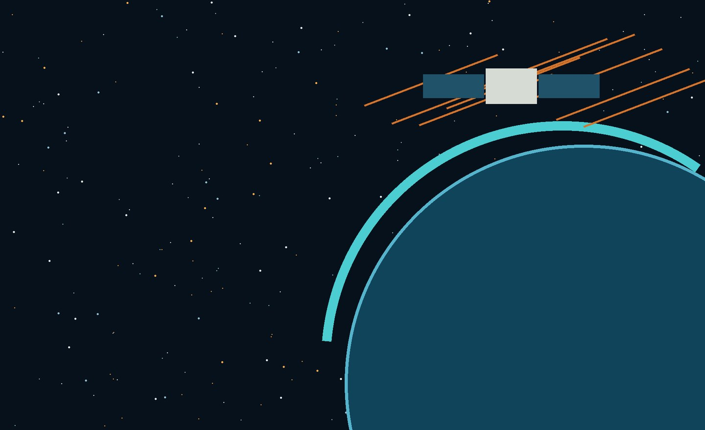

CREATE WHAT
COMES NEXT.
We explore unanswered questions, challenge existing technology and turn research into experiments, prototypes and new possibilities.
RESEARCH IS HOW
WE MOVE FORWARD.
AITRI exists to investigate what is unknown and build what does not exist yet. We design, measure, deploy and improve — following evidence wherever it leads.
QUESTION.
BUILD. LEARN.
Research does not have to begin with a product. Sometimes the question itself is worth pursuing.
Design
Turn a question into an experiment, architecture or prototype.
Measure
Collect evidence. Test assumptions. Understand what actually happens.
Deploy
Move ideas beyond the bench into environments where they can be challenged.
Improve
Learn from results, failure and unexpected behavior — then iterate.
BUILT TO
DISCOVER.
Current independent research and experimental engineering at AITRI.
NO SINGLE
BOUNDARY.
Start where the evidence and the questions are strongest. Expand as the institute grows.
Wireless Systems
Wi‑Fi HaLow, mesh networking, RF, sensing and distributed communications.
Energy
Solar, monitoring, power electronics and resilient distributed systems.
Embedded Computing
MCUs, MPUs, RTOS, edge systems, electronics and hardware architecture.
Fundamental + Emerging
Science and technology questions worth exploring before the application is obvious.
FOLLOW THE
IDEAS.
Short entry points. Go deeper when something catches your attention.

EXPLORE WHAT
HUMANITY IS BUILDING.
AITRI points outward too — toward the institutions, experiments and tools pushing knowledge forward.
Explore missions in 3D ↗
Interactive views of spacecraft, Earth, asteroids and NASA missions.
CubeSats + SmallSats ↗
Small spacecraft opening new possibilities for research and exploration.
Fundamental physics ↗
Explore experiments and the questions behind particle physics.
Research + development ↗
Applied research across computing, health, climate, security and space.
Latest discoveries ↗
Go directly to current science stories and mission updates.
INNOVATION IS OUR PURPOSE.
RESEARCH IS HOW WE GET THERE.
BRING US A
DIFFICULT QUESTION.
Research ideas, technical collaboration and scientific conversations are welcome.